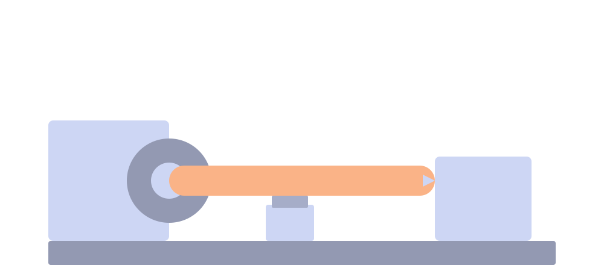

A coding agent surface for Open WebUI. Your model gets real tools. Your files persist. You never touch a terminal.
This video is rendered from source on every push. Source →
You talk to a model in Open WebUI. The model calls Lathe's tools —
bash, write, edit, read,
expose, and more. Every tool call executes in a cloud VM
that belongs to you, managed by Daytona.
The sandbox starts automatically on your first tool call and persists indefinitely. Files you create in one conversation are still there in the next. The sandbox idles after 15 minutes and archives after an hour, but wakes transparently whenever you need it.
Each tool runs against a persistent sandbox VM that follows you anywhere your browser does. Start a project on your laptop, tweak it on the bus, push changes from the check-out line at the grocery store.
Run any shell command. Install packages, compile code, run tests, manage git repos.
Read files with line numbers. Supports offset/limit for large files.
Create or overwrite files. Parent directories are created automatically.
Exact string replacement in files. Safer than rewriting the whole file.
Give the user a public URL for any sandbox service — web apps, file browsers (dufs), IDEs (code-server) — or a time-limited SSH command.
Load project context and agent skills from your repo's conventions.
Wipe your sandbox and start fresh. Requires explicit confirmation.
These are starting points — real prompts you can send to a model with Lathe enabled. The model figures out which tools to call.
env_vars in your user settings (e.g. {"GITHUB_TOKEN":"ghp_..."}) — every bash command gets them, the model never sees the values.
Unlike ephemeral code interpreters, your Lathe sandbox is yours. It has your files, your installed packages, your git repos, your running servers. Start a conversation Monday, come back Wednesday — everything is where you left it.
The sandbox sleeps when idle (15 min default) and archives after an hour.
The next tool call wakes it transparently. If you want a clean slate,
ask the model to destroy it.
Most users need zero configuration. But if you work with APIs or private repos, you can set environment variables that get injected into every shell command:
Values are never shown to the model. They're exported in the shell preamble
with single-quoted values to prevent expansion. Your system prompt can
reference $GITHUB_TOKEN by name without leaking the secret.
Lathe is a single Python file (lathe.py) deployed as an
Open WebUI Tool.
It needs a Daytona API key and a
deployment label. Configure these as admin Valves after install.
See the README for full deployment instructions, valve reference, testing guide, and design docs.